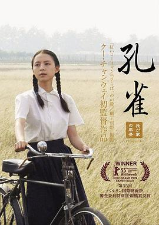

孔雀
又名：Peacock
小时候多么地美好，长大进入社会、离开父母襁褓后却一次一次地被毒打。看完留下的只是压抑和时代的眼泪。如今这个时代，这样的故事还是在一直上演，只是方式变得文明和隐晦了。引用高赞评论：“孔雀确实开屏了，但大多数时候，面对我们的不是它美丽的羽翼，而是它那不怎么雅观的屁股。”（另，女主好像我失联的小学同桌）
作品信息
| 导演 | 顾长卫 |
| 编剧 | 李樯 |
| 主演 | 张静初 / 冯粒 / 吕聿来 / 黄梅莹 / 刘冠成 / 安静 / 于谨维 |
| 类型 | 剧情 / 家庭 |
| 制片国家/地区 | 中国大陆 |
| 语言 | 汉语普通话 / 晋语 |
| 上映日期 | 2005-02-18(中国大陆) |
| 片长 | 136分钟 / 141分钟(日本版DVD) / 144分钟(德国) |
| IMDb | tt0445506 |
说过什么
2025-10-28 16:45:06
看过 · 时间来自广播，短评来自标记页
小时候多么地美好，长大进入社会、离开父母襁褓后却一次一次地被毒打。看完留下的只是压抑和时代的眼泪。如今这个时代，这样的故事还是在一直上演，只是方式变得文明和隐晦了。引用高赞评论：“孔雀确实开屏了，但大多数时候，面对我们的不是它美丽的羽翼，而是它那不怎么雅观的屁股。”（另，女主好像我失联的小学同桌）
最后一次看到是 2026-08-01T11:04:00+10:00 · 豆瓣原页